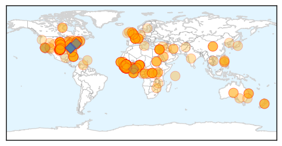
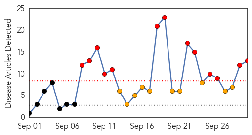

Ebola
30-Day Web Trend
0 alerts, 0 warnings

30-Day Twitter Trend
0 alerts, 0 warnings

Article Locations
Article Confidences
Top Articles:
- 1.000
- Nigeria’s Ebola outbreak may be coming to an end
- 1.000
- First U.S. case of Ebola diagnosed in Texas after man who came from Liberia falls ill
- 1.000
- What we know about the first Ebola patient diagnosed in the US
- 1.000
- Ebola is in the US. Here's how health officials will try to contain it.
- 1.000
- B.C. officials reassure residents about Ebola after first U.S. case
- 1.000
- B.C. officials reassure residents about Ebola after first U.S. case
- 1.000
- Dallas hospital diagnoses first patient with Ebola
- 1.000
- Traveler from Liberia is first Ebola patient diagnosed in U.S.
- 1.000
- CHRONOLOGY-Worst Ebola outbreak on record tests global response
- 1.000
- Traveller from Liberia is first Ebola patient diagnosed in U.S. - World
- 1.000
- Ebola case diagnosed in US
- 1.000
- Ebola case diagnosed in US
- 1.000
- First Ebola Case Diagnosed in the U.S.
- 1.000
- UPDATE 4-Traveler from Liberia is first Ebola patient diagnosed in U.S.
- 1.000
- Ebola In America: CDC Confirms First-Ever Case In United States
- 1.000
- Health Official Says Family Members of US Ebola Patient Were Likely Exposed
- 1.000
- Ebola man lived in US for a week
- 1.000
- Catholic Aid Vital to Solving Ebola Crisis
- 1.000
- First Ebola Case Confirmed in Dallas; DFR Crew Quarantined
- 1.000
- NationalJournal
- 1.000
- First U.S. case of Ebola surfaces in Dallas
- 1.000
- CDC confirms first case of Ebola in the United States
- 1.000
- First U.S. Ebola confirmed in Dallas patient
- 1.000
- Dallas hospital treating Ebola patient
- 1.000
- Dallas hospital treating Ebola patient
- 1.000
- US confirms first Ebola case - World News
- 1.000
- CDC and Texas Health Department Confirm First Ebola Case Diagnosed in the US
- 1.000
- Federal health officials confirm first Ebola case diagnosed in the U.S.
- 1.000
- First case of deadly Ebola diagnosed in United States
- 1.000
- Dallas hospital diagnoses first patient with Ebola
- 1.000
- Officials confirm first Ebola case diagnosed in US
- 1.000
- US confirms first case of Ebola - Emirates 24
- 1.000
- Ebola is in America: Liberian national Thomas Eric Duncan is diagnosed with disease in Dallas, Texas
- 1.000
- Government confirms first case of Ebola in U.S.
- 1.000
- Ebola in North America: Why you shouldn't panic
- 1.000
- Health officials confirm first Ebola case diagnosed in U.S.
- 1.000
- Ebola outbreak in Nigeria and Senegal may be over
- 1.000
- CDC Confirms First Case of Ebola in US as Patient Is Diagnosed With Deadly Virus in Texas Hospital
- 1.000
- Ebola in the U.S.: What you need to know now
- 1.000
- First Ebola case diagnosed in the US
- 1.000
- Ebola confirmed in Dallas patient
- 1.000
- Ebola outbreaks in Nigeria, Senegal, appear contained: CDC reports
- 1.000
- CDC says patient being treated at Dallas hospital has Ebola, first U.S. diagnosed case
- 1.000
- Ebola outbreaks in Nigeria, Senegal, appear contained: CDC reports
- 1.000
- Dallas hospital confirms 1st Ebola case in U.S.
- 1.000
- Dallas hospital confirms first Ebola case in US
- 1.000
- Ebola outbreaks in Nigeria, Senegal, appear contained: CDC reports
- 1.000
- Traveller from Liberia is first Ebola patient diagnosed in U.S.
- 1.000
- Ebola outbreak: 'Thousands of children orphaned'
- 1.000
- TAKE A LOOK- The Ebola outbreak
Showing top 50 articles...
Top Tweets:
- 0.961
- $401138 in funds to Sierra Leone Liberia & Cote D’Ivoire UMC conferences for Ebola prevention & education UMC Ebola
- 0.949
- US patient did not exhibit symptoms of Ebola during flights from W. Africa; Ebola only contagious if the person is experiencing symptoms.
- 0.939
- RT: US patient did not exhibit symptoms of Ebola during flights from W. Africa; Ebola only contagious if the person is experiencin…
- 0.923
- .@AmeshAA: Ebola really isn't that contagious. It doesn't transmit like the flu.
- 0.841
- RT: Latest map on Ebola outbreak in West Africa w/ stats for Liberia Guinea Sierra Leone & Nigeria http://t.co/UwHCDpTFoA Ebol…
- 0.802
- CDC: First diagnosed case of Ebola in the U.S. | Ebola Warning http://t.co/VaXXillGoT
- 0.774
- RT: Local public health officials in TX have begun identifying close contacts of Ebola patient for further monitoring. http:…
- 0.774
- RT: Local public health officials in TX have begun identifying close contacts of Ebola patient for further monitoring. http:…
- 0.743
- UN MIssion for Ebola Emergency Response (@UNMEER) HQ will be in Accra Ghana & have operational presences in Guinea Liberia Sierra Leone
- 0.673
- RT: Nigeria’s extensive response to a single case of Ebola shows control is possible with rapid focused interventions http:…
- 0.656
- A patient at a Dallas hospital is the first case of Ebola virus diagnosed in the U.S. the CDC says. http://t.co/GDZyDudrFO
- 0.631
- CDC & @TexasDSHS confirm 1st Ebola case diagnosed in US. Hospitalized patient recently returned from W. Africa.
- 0.617
- RT: .@TexasDSHS state publichealth lab first diagnosed Ebola in Dallas patient confirmed it. The lab system works!
- 0.615
- West Africa Ebola numbers as of September 29 2014. endebolanow ebola westafrica http://t.co/hUqh6l89ms
- 0.610
- RT: Nigeria Ebola outbreak not quite over but great response. Strong emergency ops polio eradication experience key http:/…
- 0.594
- ICYMI: We recently held a Congressional Seminar on the Ebola Outbreak in West Africa. Watch here: http://t.co/jXs1zgO5TB
- 0.585
- RT: CDC & @TexasDSHS confirm 1st Ebola case diagnosed in US. Hospitalized patient recently returned from W. Africa.
- 0.585
- RT: CDC & @TexasDSHS confirm 1st Ebola case diagnosed in US. Hospitalized patient recently returned from W. Africa.
- 0.545
- RT: Remember you are not likely to catch Ebola just by being in proximity to someone who has the virus; it is not airborne …
- 0.531
- RT: The C.D.C. has confirmed first ebola case diagnosed in the United States.
- 0.527
- Local public health officials in TX have begun identifying close contacts of Ebola patient for further monitoring. http://t.co/LDw6XPQtUO
- 0.521
- RT: According to Texas Ebola case symptomatic for 4 days before admission to hospital-how many contact…
Influenza
30-Day Web Trend
13 alerts, 10 warnings

30-Day Twitter Trend
1 alerts, 0 warnings

Article Locations

Article Confidences

Top Articles:
- 0.997
- State health officials confirm two more cases of enterovirus D68
- 0.993
- Time Is Now For Flu Shots
- 0.971
- Updated: Flu shots beset by delays
- 0.962
- Vaccinate now to fight flu
- 0.956
- CDC notes more EV-D68, sees link to earlier polio-like illness
- 0.907
- Flu shots in pregnancy protect babies from being born too soon, Canadian studies show
- 0.883
- Montgomery County Health Department holding flu vaccine clinics
- 0.877
- Enterovirus may be hitting its peak
- 0.872
- Protect yourself against flu, other illnesses
- 0.732
- Atlantic General offers free flu clinics
- 0.674
- American Association of Kidney Patients Joins Fresenius Medical Care in Advocating for Vaccinations of All CKD Patients Against Flu This Season
- 0.636
- Alere Webinar Spotlights Optimal Flu Diagnostics to Keep Your Lab Ahead of the Curve
- 0.505
- A parent's worst nightmare: When a fever turns out to be cancer
Top Tweets:
- 0.626
- Flu Tip: Did you know that you can get the flu in the summer? The influenza virus is present in the community all year round.